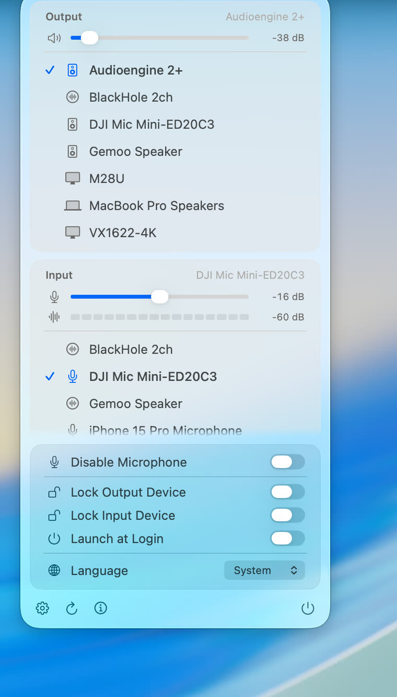

AirPods look like AirPods
AirPods and AirPods Pro/Max, Beats, headphones, a hi-fi speaker, your Mac's own speakers, a display, a microphone, a virtual device — each gets its own glyph, resolved from the device name, the CoreAudio data source, and the transport. The menu bar icon follows the output: plug in headphones and the speaker becomes a pair of headphones, so you can see where the sound is going without opening anything.
